Przydatne linki
Układ okresowy pierwiastków Dany jest prostokąt
Dany jest prostokąt  . Okręgi o średnicach
. Okręgi o średnicach  i
i  przecinają się w punktacg
przecinają się w punktacg  i 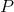 (zobacz rysunek). Wykaż, że punkty
i 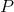 (zobacz rysunek). Wykaż, że punkty  , i
, i  są współliniowe.
są współliniowe.

- W okrąg o środku
 wpisano trójkąt równoramienny , gdzie (zobacz rysunek). Udowodnij, że 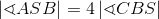.
wpisano trójkąt równoramienny , gdzie (zobacz rysunek). Udowodnij, że 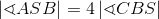.
-
 Dany jest ośmiokąt foremny
Dany jest ośmiokąt foremny  wpisany w okrąg o środku . W ośmiokącie poprowadzono przekątne
wpisany w okrąg o środku . W ośmiokącie poprowadzono przekątne  i
i  , które przecięły się w punkcie
, które przecięły się w punkcie  (patrz rysunek). Wykaż, że .
(patrz rysunek). Wykaż, że .
- Czworokąt wpisano w okrąg. Bok jest średnicą tego okręgu. Udowodnij, że
 .
.
- Dany jest czworokąt wypukły o różnych długościach boków. Wiedząc, że przekątne tego czworokąta są prostopadłe, udowodnij, że 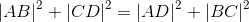.
- Dany jest prostokąt i dowolny punkt
 położony we wnętrzu prostokąta. Wykaż, że 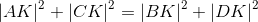.
położony we wnętrzu prostokąta. Wykaż, że 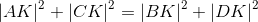. - Trapez równoramienny o podstawach i jest opisany na okręgu o promieniu
 . Wiedząc, że 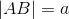 i
. Wiedząc, że 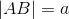 i  , wykaż, że
, wykaż, że  .
. - Dane są dwa styczne zewnętrznie okręgi o promieniach 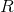 i , które jednocześnie są styczne do prostej
 w punktach i (zobacz rysunek). Wykaż, że
w punktach i (zobacz rysunek). Wykaż, że  .
.
- Dane są dwa współśrodkowe okręgi o promieniach różnej długości. W większym okręgu poprowadzono tak cięciwę, że jest ona stycznia zewnętrznie do mniejszego okręgu. Wykaż, że jeśli długość cięciwy wynosi
 , to pole powierzchni pierścienie zawartego między tymi okręgami wynosi
, to pole powierzchni pierścienie zawartego między tymi okręgami wynosi  .
. - Dany jest trójkąt prostokątny. Na każdym z boków narysowano półokręgi (zobacz rysunek). Wykaż, że pole zakreskowanych obszarów, zwanych księżycami Hipokratesa, równe jest polu trójkąta.

- W prostokąt wpisano trzy okręgi o promieniu wzajemnie styczne. Każdy z okręgów jest styczny do jednego lub dwóch boków prostokąta (zobacz rysunek). Wykaż, że pole prostokąta wynosi
 .
.
- W trójkąt prostokątny wpisano okręg o promieniu . Na tym samym trójkącie opisano okręg o promieniu 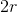. Wykaż, że pole trójkąta wynosi 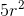.
- W trójkąt prostokątny wpisano okręg o promieniu . Na tym samym trójkącie opisano okręg o promieniu . Udowodnij, że pole trójkąta wynosi 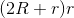.
- W prostokącie punkt leży na boku w taki sposób, że
 , a punkt 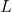 jest środkiem boku
, a punkt 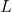 jest środkiem boku  (zobacz rysunek). Wiedząc, że
(zobacz rysunek). Wiedząc, że  i 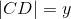, wykaż, że
i 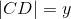, wykaż, że  .
.
- W trójkącie poprowadzono środkową , na której zaznaczono punkt (zobacz rysunek). Wykaż, że .

- Dany jest równoległobok , w którym bok jest dwa razy dłuższy od boku . W połowie odcinka zaznaczono punkt . Wykaż, że kąt
 jest kątem prostym.
jest kątem prostym. - Dany jest trapez , w którym
 . Na boku wybrano taki punkt , że i 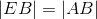. Wykaż, że kąt
. Na boku wybrano taki punkt , że i 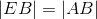. Wykaż, że kąt  jest prosty.
jest prosty. - W trójkącie poprowadzono dwusieczne kątów przy wierzchołkach i , które przecinają się w punkcie . Uzasadnij, że kąt
 jest rozwarty.
jest rozwarty. - Dany jest trójkąt ostrokątny o bokach długości ,
 , i kątach
, i kątach  ,
,  , 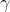 (zobacz rysunek). Wykaż, że 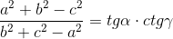.
, 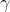 (zobacz rysunek). Wykaż, że 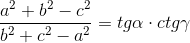.
- Dany jest trójkąt prostokątny , gdzie wysokośc 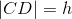.Wysokość podzieliła przeciwprostokątną na odcinki o długościach i
 . Wykaż, że
. Wykaż, że  .
. - Dany jest trójkąt prostokątny . Na bokach i dorysowano kwadraty odpowiednio
 oraz
oraz  . Poprowadzono odcinki
. Poprowadzono odcinki  oraz
oraz  , które przecięly boki trójkąta w punktach i (zobacz rysunek). Wykaż, że
, które przecięly boki trójkąta w punktach i (zobacz rysunek). Wykaż, że  .
.
- Dane są trójkąty prostokątne równoramienne i (zobacz rysunek). Wykaż, że , jeżeli wiadomo, że
 .
.
- Na bokach trójkąta równobocznego zbudowano kwadraty ,
 i
i  (zobacz rysunek). Wykaż, że trójkąt 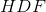 jest równoboczny.
(zobacz rysunek). Wykaż, że trójkąt 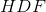 jest równoboczny.
- Na boku trójkąta równobocznego zbudowano kwadrat, a na boku kwadratu zbudowano kolejny trójkąt równoboczny (zobacz rysunek). Wykaż, że trójkąt
 jest równoboczny.
jest równoboczny.
- Dany jest równoległobok . Na bokach i zbudowano kwadraty 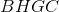 i 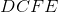. Wykaż, że .

- We wnętrzu trójkąta równobocznego o boku długości umieszczono punkt (zobacz rysunek). Wykaż, że suma wszystkich odległości tego punktu od poszczególnych boków wynosi
 .
.
- Dany jest trójkąt , w którym poprowadzono wysokość
 i odcinek 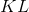, gdzie jest środkiem boku oraz
i odcinek 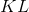, gdzie jest środkiem boku oraz  . Wykaż, że trójkąt
. Wykaż, że trójkąt  jest trójkątem równobocznym.
jest trójkątem równobocznym.
- Dany jest trójkąt . na boku znajduje się punkt . Dorysowano dwa okręgi. Pierwszy przechodzi przez punkty i , a drugi przez punkty i . Okręgi przecięły się również w punkcie . Pierwszy okrag przeciął bok w punkcie , a drugi okrąg - bok w punkcie
 (zobacz rysunek). Wykaż, że na czworokącie
(zobacz rysunek). Wykaż, że na czworokącie  można opisać okrąg.
można opisać okrąg.
- Dane są dwa niewspółrodkowe okręgi , które przecinają się w punktach i . Odcinek
 jest średnicą pierwszego okręgu, a odcinek
jest średnicą pierwszego okręgu, a odcinek  jest średnicą drugiego okręgu. Wykaż, że punkty , , są współliniowe.
jest średnicą drugiego okręgu. Wykaż, że punkty , , są współliniowe. - Okręg o środku podzielono punktami 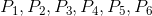 na sześć równych łuków. Uzasadnij, że 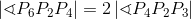.

- Punkty
 dzielą okręg o środku w punkcie na 15 równych łuków (zobacz rysunek). Punkt jest punktem przecięcia odcinków
dzielą okręg o środku w punkcie na 15 równych łuków (zobacz rysunek). Punkt jest punktem przecięcia odcinków  oraz
oraz  . Wykaż, że 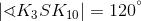.
. Wykaż, że 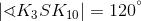.
- W okrąg o promieniu wpisano kwadrat . Punkt leży na okręgu, ale nie jest wierzchołkiem kwadratu . Wykaż, że 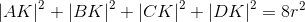.
- Dany jest trapez prostokątny o podstawach i . Wykaż, że różnica kwadratów podstaw jest równa różnicy kwadratów przekątnych tego trapezu.
- Dany jest prostokąt , gdzie
 i
i  . Wykaż, że odległośc punktu od przekątnej 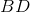 jest równa 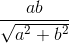.
. Wykaż, że odległośc punktu od przekątnej 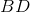 jest równa 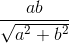. - W trapezie równoramiennym podstawy mają długość i . Uzasadnij, że pole koła wpisanego w ten trapez ma wartość
 .
. - Dane są trzy okręgi o środkach 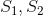 i , których stosunek długości promieni wynosi
 . Każdy okręg jest styczny zewnętrznie z pozostałymi dwoma okręgami. Wykaż, że trójkąt 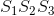 jest prostokątny.
. Każdy okręg jest styczny zewnętrznie z pozostałymi dwoma okręgami. Wykaż, że trójkąt 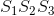 jest prostokątny. - Dany jest trójkąt prostokątny. Na każdym boku trójkąt zbudowano półkole (zobacz rysunek). Wykaż, że suma powierzchni obu półkoli zbudowanych na przyprostokątnych jest równa powierzchni pólkola zbudowanego na przeciwprostokątnej.

- Wykaż, że suma pól księżyców Hipokratesa zbudowanych na bokach trójkąta równobocznego jest większa od pola tego trójkąta.
- Dwa okręgi o środkach 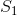 i
 są styczne zewnętrznie i każdy z nich jest jednocześnie styczny do ramion tego samego kąta prostego. Udowodnij, że stosunek promienia mniejszego z tych okręgów do promienia większego jest równy
są styczne zewnętrznie i każdy z nich jest jednocześnie styczny do ramion tego samego kąta prostego. Udowodnij, że stosunek promienia mniejszego z tych okręgów do promienia większego jest równy  .
.
- W okrąg o promieniu wpisano trójkąt prostokątny o przyprostokątnych i oraz przeciwprostokątnej . W trójkąt ten wpisano okręg o promieniu
 . Wykaż, że
. Wykaż, że  .
. - Na trójkącie prostokątnym opisano okrąg o promieniu i w ten sam trójkąt wpisano okręg o promieniu . Wykaż, że wysokość trójkąta opuszczona na przeciwprostokątną jest równa
 .
. - W prostokącie 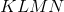 punkt jest środkiem boku
 , a punkt środkiem boku 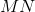 (zobacz rysunek). Wykaż, że
, a punkt środkiem boku 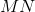 (zobacz rysunek). Wykaż, że  .
.
- Dany jest trapez , gdzie . W trapezie poprowadzono przekątne przecinające się w punkcie . Wiedząc, że
 , 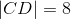 oraz pole trójkąta
, 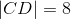 oraz pole trójkąta  jest równe 16, wykaż, że trójkąty
jest równe 16, wykaż, że trójkąty  i
i  mają równe pola o wartości 24.
mają równe pola o wartości 24.
- Z dwóch sąsiednich wierzchołków równoległoboku poprowadzono dwusieczne kątów. Wykaż, że dwusieczne te są prostopadłe.
- Dane są dwa okręgi o środkach w punkcie i styczne w punkcie oraz trapez , w którym
 (zobacz rysunek). Wykaż, że kąt 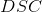 jest kątem prostym.
(zobacz rysunek). Wykaż, że kąt 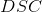 jest kątem prostym.
- Na kolejnych bokach trójkąta równobocznego zbudowano trójkąt równoboczny , kwadrat
 oraz kwadrat
oraz kwadrat  . Wykaż, że kąt
. Wykaż, że kąt  jest kątem prostym.
jest kątem prostym.
- Udowodnij, że długość środkowej
 trójkąta o bokach , , opadającej na bok można wyrazić wzorem 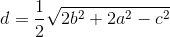.
trójkąta o bokach , , opadającej na bok można wyrazić wzorem 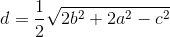. - Dany jest trójkąt prostokątny o przyprostokątnych długości
 i
i  . W trójkąt wpisano kwadrat o boku (zobacz rysunek). Wykaż, że
. W trójkąt wpisano kwadrat o boku (zobacz rysunek). Wykaż, że  .
.
- Dany jest czworokąt , który nie ma par boków równoległych. Punkt jest środkiem boku , a punkt jest środkiem boku . Natomiast punkty
 i
i  są odpowiednio środkami przekątnych i . Wykaż, że 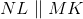.
są odpowiednio środkami przekątnych i . Wykaż, że 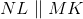. - Dane są dwa różne kwadraty oraz 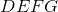 o wspólnym wierzchołku (zobacz rysunek). Wykaż, że
 .
.
- Na bokach trójkąta równobocznego leżą punkty , , w taki sposób, że punkt leży na boku , punkt leży na , a punkt leży na oraz zachodzi równość (zobacz rysunek). Wykaż, że trójkąt
 jest równoboczny.
jest równoboczny.
- Dany jest równoległobok . Na boku oraz na boku zbudowano trójkąty równoboczne i (zobacz rysunek). Udowodnij, że trójkąt
 jest równoboczny.
jest równoboczny.
- Dany jest trójkąt , w którym punkt jest środkiem boku oraz
 . Bok przedłużono w ten sposób, że
. Bok przedłużono w ten sposób, że  (zobacz rysunek). Wykaż, że
(zobacz rysunek). Wykaż, że  .
.
- We wnętrzu sześciokąt aforemnego o boku długości umieszczono punkt (zobacz rysunek). Wykaż, że suma wszystkich odległości punktu od poszczególnych boków wynosi 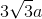.

- Trójkąt jest równoboczny. Na boku obrano punkt oraz przedłużono bok do punktu tak, że 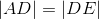. Wykaż, że 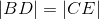.

- Wykaż, że w trójkącie prostokątnym o długościach przyprostokątnych i oraz przeciwprostokątnej długości , promień okręgu wpisanego w ten trójkąt można wyrazić wzorem
 .
. - Dany jest kwadrat . Przekątne kwadratu przecinają się w punkcie . Punkty i są środkami odcinków odpowiednio i , a punkty i
 leżą na przekątnej i spełniają warunki
leżą na przekątnej i spełniają warunki  i 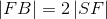 (zobacz rysunek). Wykaż, że
i 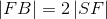 (zobacz rysunek). Wykaż, że  .
.
- Czworokąt wpisano w okrąg. Dwusieczne tego czworokąta przecinają się w punktach , , , (zobacz rysunek). Udowodnij, że na czworokącie
 można opisać okrąg.
można opisać okrąg.
Zadania powtórzeniowe